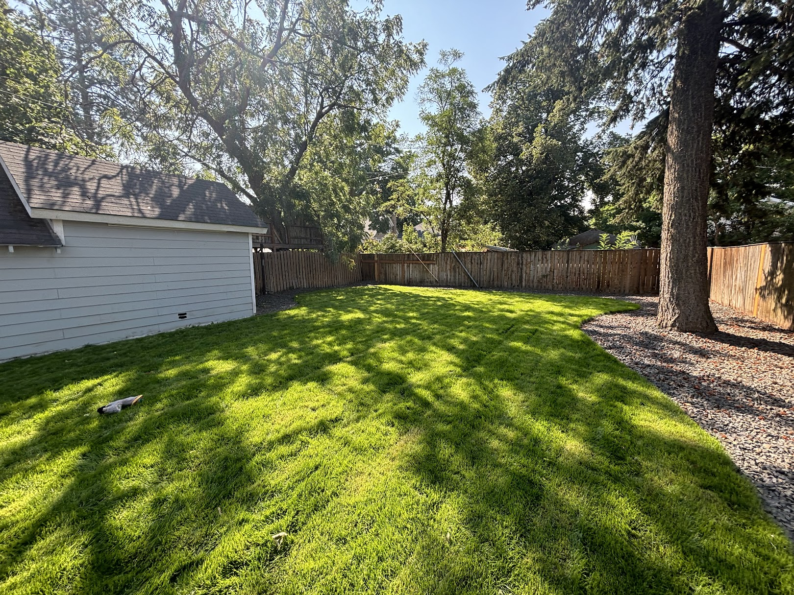
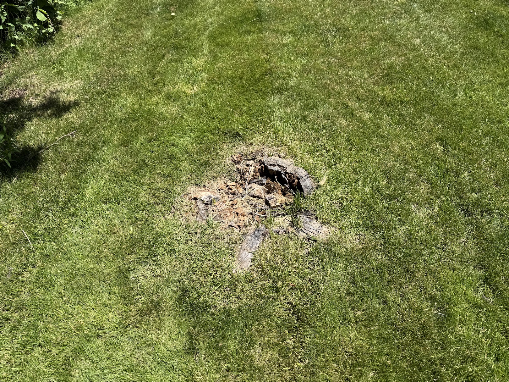

Backyard Stump Removal & Lawn Restoration
The Video
Before & After


The Story
The Situation
This Spokane homeowner wanted to reclaim a backyard that had an old stump taking up usable space. Beyond being an eyesore, the stump made it harder to create the clean, open lawn they had in mind. The goal was straightforward: get the stump out of the way, clean up the area, and leave the yard ready for its next step.
The Challenge
The stump was located in a residential backyard surrounded by mature trees, fencing, landscaping, and nearby structures. That meant access and control mattered just as much as grinding the stump itself. We needed to work carefully around the existing property while taking the stump down far enough that it wouldn't interfere with the finished yard.
What We Did
We brought our tracked stump grinder into the backyard and ground the stump below grade, working through the stump and surface root flare rather than simply cutting the visible wood flush with the ground. Once the grinding was complete, the remaining wood debris was cleaned up and the area was prepared so the homeowner could move forward with restoring the lawn.
The Result
The stump is gone, the yard is cleaned up, and what had been a dry, uneven backyard is now a green, open lawn that can actually be used. This project is a good example of why stump removal is often about more than getting rid of a piece of wood — removing one obstacle can make it possible to completely reclaim an outdoor space.
JOB TITLE — e.g. “Six stumps cleared for a new fence line”
The Video
Before & After


The Story
The Situation
FILL IN A multi-stump job works well here — it shows the per-stump savings you talk about on the services page.
The Challenge
FILL IN Volume of chips generated, staging the haul-off, and working around the existing fence or structures.
What We Did
FILL IN Order you worked the stumps in, how much material came out, and the backfill and grade-matching work.
The Result
FILL IN Ground ready for the fence crew, how many days it took, and what the customer said about the cleanup.
JOB TITLE — e.g. “Backyard stump behind a 36-inch gate”
The Video
Before & After
TIP Shoot the after photo from the exact spot you shot the before. Matching angles is what sells it.
The Story
The Situation
FILL IN A tight-access job shows customers exactly why you ask about gate width before quoting.
The Challenge
FILL IN Getting equipment through the opening, protecting turf along the path in, and working in a confined space.
What We Did
FILL IN Smaller machine, plywood tracking, shielding around the fence and siding, and your cleanup approach.
The Result
FILL IN Finished result and — just as important — the condition you left the lawn and access path in.